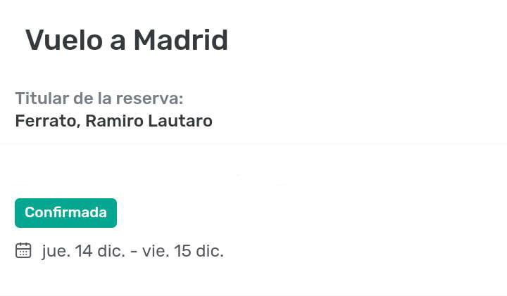

Y buuueno, este es mi regalo. Si, puede que te lo hayas esperado por mis pistas y las cosas que dije, o tal vez no por tu condición de rubia. Puede que sea medio egocéntrico que el regalo se yo jajajaj pero bueno, e' la que hay. Probablemente en este momento yo esté reventando de alegría y re contra emocionado sabiendo que por fin voy a volver a ver tus ojos. Para este momento te dedico 'Vidas perfectas', obviamente de Tan Bionica (la última parte es muy bonita)
Noches enteras sin dormir, horas que fueron lustros y días que son décadas para llegar a éste momento. La promesa que te hice en tu balcón la madrugada del 20 cumplida. En la carta que vos me escribiste decía
"Se que nos volveremos a ver"
tenías razón, ya tiene fecha ese 'volveremos'.
Y aún que sigamos siendo solo 2 personas separadas por el mar del tiempo, cada día se reducen los kilómetros y se acerca más nuestro esperado reencuentro, mi bella y preciosa Adri.
Y prepara esas 12 uvas, el champagne y el jamón que bailaremos, tomaremos y reventaremos por los aires para año nuevo.

anda pa alla boba